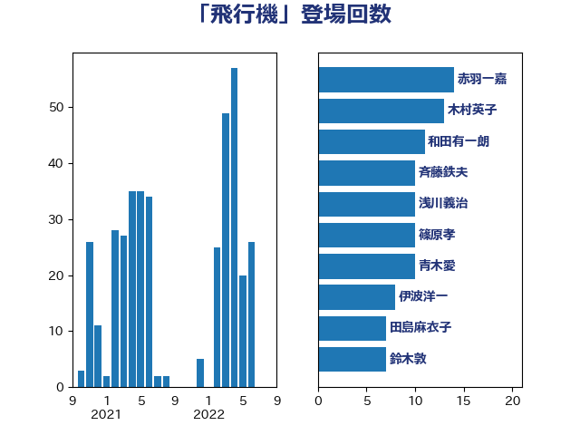

単語「飛行機」

| 赤羽一嘉 | 公明党 | 14 回 |
| 木村英子 | れいわ新選組 | 13 回 |
| 和田有一朗 | 日本維新の会 | 11 回 |
| 斉藤鉄夫 | 公明党 | 10 回 |
| 浅川義治 | 日本維新の会 | 10 回 |
| 篠原孝 | 立憲民主党 | 10 回 |
| 青木愛 | 立憲民主党 | 10 回 |
| 伊波洋一 | 無所属 | 8 回 |
| 田島麻衣子 | 立憲民主党 | 7 回 |
| 鈴木敦 | 国民民主党 | 7 回 |
| 室井邦彦 | 日本維新の会 | 6 回 |
| 浦野靖人 | 日本維新の会 | 6 回 |
| 清水貴之 | 日本維新の会 | 6 回 |
| 礒崎哲史 | 国民民主党 | 6 回 |
| 鈴木庸介 | 立憲民主党 | 6 回 |
| 高橋千鶴子 | 日本共産党 | 5 回 |
| 佐藤正久 | 自由民主党 | 4 回 |
| 古川元久 | 国民民主党 | 4 回 |
| 岩谷良平 | 日本維新の会 | 4 回 |
| 石垣のりこ | 立憲民主党 | 4 回 |
| 芳賀道也 | 国民民主党 | 4 回 |
| 谷川とむ | 自由民主党 | 4 回 |
| 吉田宣弘 | 公明党 | 3 回 |
| 川合孝典 | 国民民主党 | 3 回 |
| 市村浩一郎 | 日本維新の会 | 3 回 |
| 武井俊輔 | 自由民主党 | 3 回 |
| 泉田裕彦 | 自由民主党 | 3 回 |
| 稲富修二 | 立憲民主党 | 3 回 |
| 茂木敏充 | 自由民主党 | 3 回 |
| 菅義偉 | 自由民主党 | 3 回 |
| 中谷元 | 自由民主党 | 2 回 |
| 丸川珠代 | 自由民主党 | 2 回 |
| 井上貴博 | 自由民主党 | 2 回 |
| 宮崎政久 | 自由民主党 | 2 回 |
| 宮本徹 | 日本共産党 | 2 回 |
| 小野泰輔 | 日本維新の会 | 2 回 |
| 山岡達丸 | 立憲民主党 | 2 回 |
| 山本剛正 | 日本維新の会 | 2 回 |
| 新妻秀規 | 公明党 | 2 回 |
| 末松義規 | 立憲民主党 | 2 回 |
| 泉健太 | 立憲民主党 | 2 回 |
| 渡辺周 | 立憲民主党 | 2 回 |
| 竹内真二 | 公明党 | 2 回 |
| 羽田次郎 | 立憲民主党 | 2 回 |
| 辻元清美 | 立憲民主党 | 2 回 |
| 逢坂誠二 | 立憲民主党 | 2 回 |
| 金城泰邦 | 公明党 | 2 回 |
| 青柳仁士 | 日本維新の会 | 2 回 |
| 高橋光男 | 公明党 | 2 回 |
| 上川陽子 | 自由民主党 | 1 回 |
| 下条みつ | 立憲民主党 | 1 回 |
| 世耕弘成 | 自由民主党 | 1 回 |
| 中村裕之 | 自由民主党 | 1 回 |
| 伊藤孝江 | 公明党 | 1 回 |
| 加藤鮎子 | 自由民主党 | 1 回 |
| 古賀友一郎 | 自由民主党 | 1 回 |
| 吉川赳 | 無所属 | 1 回 |
| 吉田忠智 | 立憲民主党 | 1 回 |
| 大串博志 | 立憲民主党 | 1 回 |
| 大塚耕平 | 国民民主党 | 1 回 |
| 大野泰正 | 自由民主党 | 1 回 |
| 安江伸夫 | 公明党 | 1 回 |
| 寺田静 | 無所属 | 1 回 |
| 小山展弘 | 立憲民主党 | 1 回 |
| 小林鷹之 | 自由民主党 | 1 回 |
| 小西洋之 | 立憲民主党 | 1 回 |
| 小野寺五典 | 自由民主党 | 1 回 |
| 山井和則 | 立憲民主党 | 1 回 |
| 山口壯 | 自由民主党 | 1 回 |
| 山崎誠 | 立憲民主党 | 1 回 |
| 山本左近 | 自由民主党 | 1 回 |
| 山添拓 | 日本共産党 | 1 回 |
| 岸信夫 | 自由民主党 | 1 回 |
| 平木大作 | 公明党 | 1 回 |
| 斎藤アレックス | 国民民主党 | 1 回 |
| 朝日健太郎 | 自由民主党 | 1 回 |
| 杉本和巳 | 日本維新の会 | 1 回 |
| 東徹 | 日本維新の会 | 1 回 |
| 松野博一 | 自由民主党 | 1 回 |
| 林芳正 | 自由民主党 | 1 回 |
| 柴田巧 | 日本維新の会 | 1 回 |
| 梅村みずほ | 日本維新の会 | 1 回 |
| 梅村聡 | 日本維新の会 | 1 回 |
| 櫻井充 | 自由民主党 | 1 回 |
| 池下卓 | 日本維新の会 | 1 回 |
| 河野太郎 | 自由民主党 | 1 回 |
| 浅田均 | 日本維新の会 | 1 回 |
| 浜口誠 | 国民民主党 | 1 回 |
| 玉木雄一郎 | 国民民主党 | 1 回 |
| 田村まみ | 国民民主党 | 1 回 |
| 田村憲久 | 自由民主党 | 1 回 |
| 田村智子 | 日本共産党 | 1 回 |
| 石井苗子 | 日本維新の会 | 1 回 |
| 福島みずほ | 社会民主党 | 1 回 |
| 紙智子 | 日本共産党 | 1 回 |
| 緒方林太郎 | 無所属 | 1 回 |
| 自見はなこ | 自由民主党 | 1 回 |
| 菅直人 | 立憲民主党 | 1 回 |
| 萩生田光一 | 自由民主党 | 1 回 |
| 落合貴之 | 立憲民主党 | 1 回 |
| 西村康稔 | 自由民主党 | 1 回 |
| 西村智奈美 | 立憲民主党 | 1 回 |
| 道下大樹 | 立憲民主党 | 1 回 |
| 酒井庸行 | 自由民主党 | 1 回 |
| 金村龍那 | 日本維新の会 | 1 回 |
| 鈴木宗男 | 日本維新の会 | 1 回 |
| 鈴木貴子 | 自由民主党 | 1 回 |
| 阿部知子 | 立憲民主党 | 1 回 |
| 高木啓 | 自由民主党 | 1 回 |
| 高良鉄美 | 無所属 | 1 回 |
| 麻生太郎 | 自由民主党 | 1 回 |